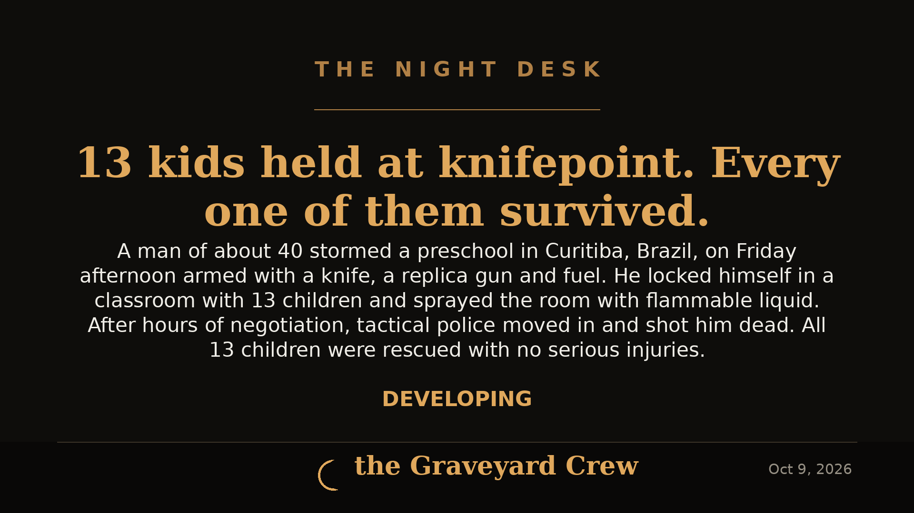
October 10, 2026
13 children held at knifepoint in Brazil school — police kill suspect, every child survives
A man armed with a knife, a replica gun and fuel locked himself in a classroom with 13 children at a Curitiba preschool Friday. After hours of negotiation, tactical police shot him dead. All 13 children were rescued with no serious injuries.
READ THE STORY →October 09, 2026
23-Year-Old Charged With Murder After Bloomington Porch Shooting
Jaymon Trey Gilreath is charged with murder after a 24-year-old man was shot on a Bloomington porch Thursday night; police caught him eight minutes later, with the 9mm found in its holster near a park bench.
READ THE STORY →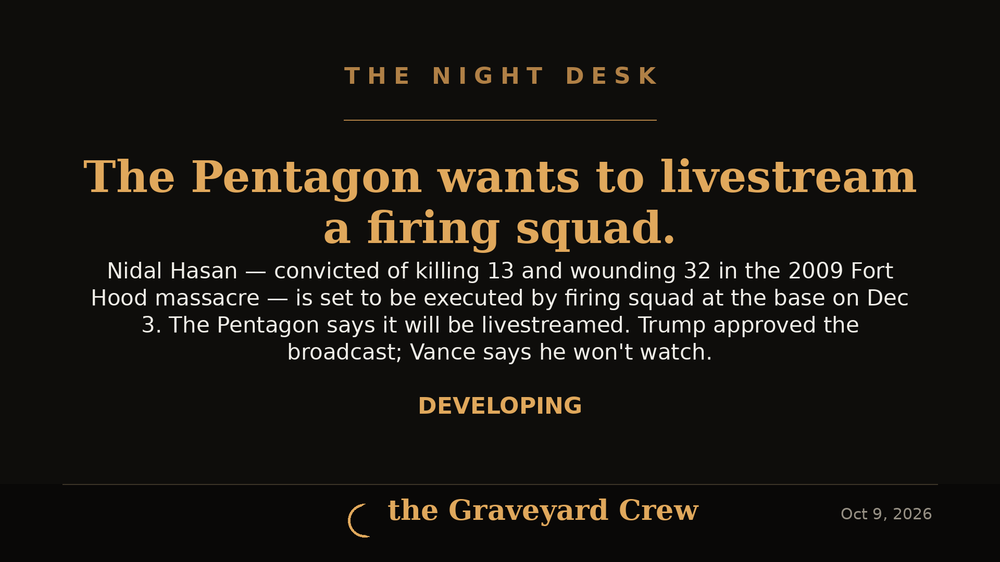
October 09, 2026
Pentagon to livestream firing-squad execution of Fort Hood shooter Nidal Hasan on Dec 3
Nidal Hasan, convicted of killing 13 and wounding 32 at Fort Hood in 2009, is set to be executed by firing squad at the base on Dec 3 — and the Pentagon says it will be livestreamed. Trump approved the broadcast; Vance says he won't watch.
READ THE STORY →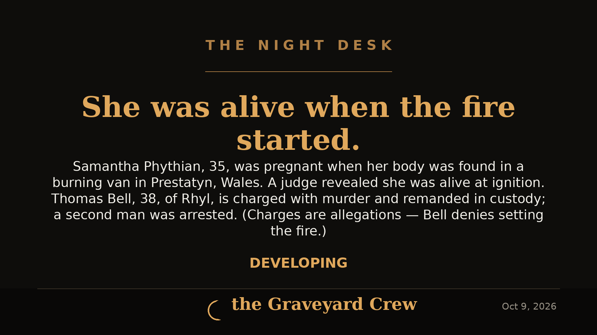
October 09, 2026
Pregnant woman was alive when burning van was set alight in Wales; man charged with murder
A postmortem revealed Samantha "Sammi" Phythian, 35, was pregnant when she died in a burning van in Prestatyn. A judge said she was alive when the fire began. Thomas Bell, 38, has been charged with murder and remanded in custody.
READ THE STORY →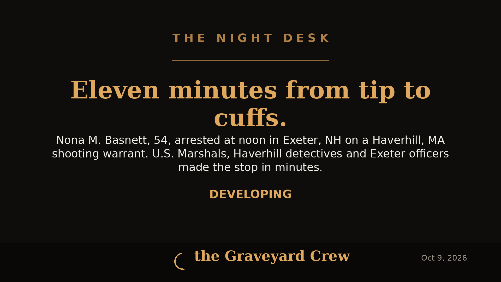
October 09, 2026
Haverhill shooting suspect caught in Exeter, NH — 11 minutes from tip to cuffs
Nona M. Basnett, 54, of Sandown, NH was arrested around noon Friday at an Exeter home on an extraditable Massachusetts warrant stemming from a shooting in Haverhill the night before. U.S. Marshals, Haverhill detectives and Exeter officers took her into custody 11 minutes after the call came in.
READ THE STORY →October 09, 2026
DEVELOPING: Massive Earthquake Shakes Panama — Tsunami Threat Issued Across Region
A preliminary 7.7-magnitude earthquake struck southern Panama at 1:56 p.m. ET Friday, triggering a tsunami threat for Panama and neighboring countries. Metro service suspended, airport closed, schools canceled; the Panama Canal is operating normally.
READ THE STORY →October 09, 2026
AMBER ALERT CANCELED: 3-Year-Old Joshua Ovalles Found Safe, Reunited With Dad
After a regional Amber Alert and a multi-agency search across two Oregon counties, 3-year-old Joshua Ovalles was found safe in Lake Oswego and returned to his father. His mother, Mari Martinez, is in custody facing custodial interference and kidnapping charges.
READ THE STORY →
October 09, 2026
Pueblo West Mom Convicted of Murdering Her 3-Year-Old Son; Sentencing Set for Oct. 26
A Colorado jury found Samantha Kimberly guilty of first-degree murder and two counts of child abuse in the June 2024 death of her 3-year-old son. Her co-defendant already drew 45 years.
READ THE STORY →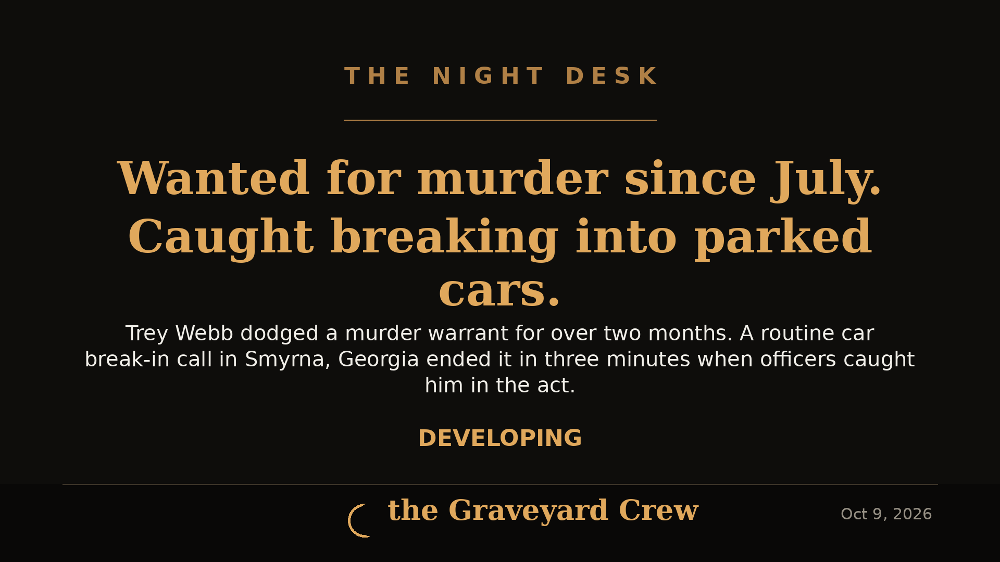
October 09, 2026
Wanted for Murder Since July — Caught Breaking Into Parked Cars
Trey Webb dodged a murder warrant for more than two months. A routine car break-in call in Smyrna, Georgia ended the run in three minutes when officers caught him in the act — and now he faces the warrant plus fresh break-in charges.
READ THE STORY →
October 09, 2026
DEVELOPING: ICE Officer Shoots Man in Neck During Bronx Arrest — 5-Year-Old Boy in the Car
Federal immigration officers fired seven rounds into a parked car in the Bronx's Marble Hill neighborhood Thursday afternoon, wounding 28-year-old Oscar Belgal below the left ear as a 5-year-old boy sat inside. NYPD says plainclothes officers approached with guns drawn; Mayor Zohran Mamdani is demanding an end to ICE enforcement actions in the city.
READ THE STORY →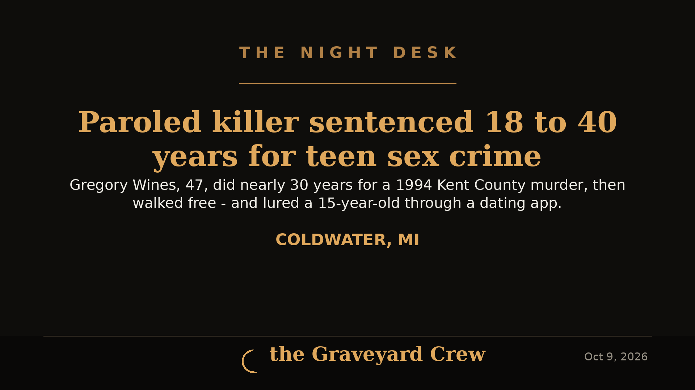
October 09, 2026
Paroled Killer Sentenced 18-40 Years for Teen Sex Crime in Coldwater
Gregory Wines, 47, served nearly 30 years for a 1994 Kent County murder — then got out and, shortly after parole ended, lured a 15-year-old girl through a dating app. On Wednesday, a Branch County judge gave him 18 to 40 years.
READ THE STORY →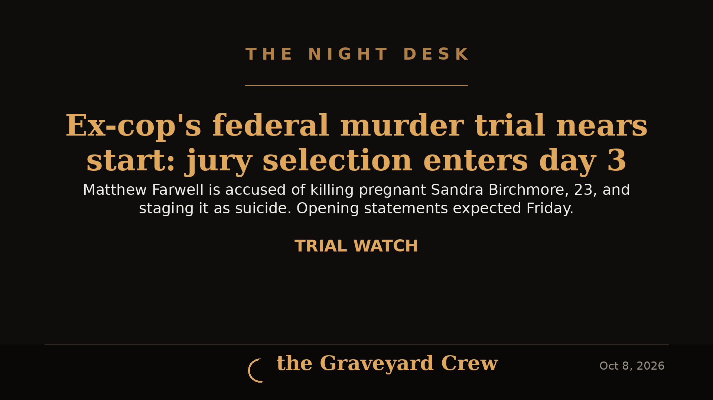
October 08, 2026
TRIAL WATCH: Ex-Stoughton Detective's Federal Murder Trial Nears Start as Jury Selection Enters Day 3
Jury selection in the federal murder trial of former Stoughton police detective Matthew Farwell entered its third day Thursday in Boston. He's accused of killing pregnant Sandra Birchmore, 23, in 2021 and staging it as suicide.
READ THE STORY →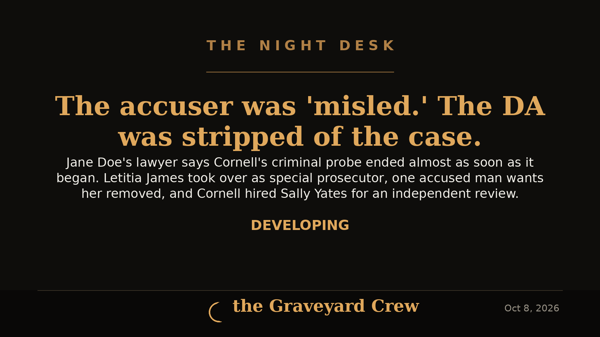
October 08, 2026
Cornell Chi Phi Case: Accuser Says She Was 'Misled,' DA Stripped of Probe, Yates Tapped for Review
Jane Doe's attorney says the criminal investigation ended almost as soon as it began. The case has been ripped from the local DA and handed to Letitia James as special prosecutor — one accused man now wants her removed — while Cornell brings in former Deputy Attorney General Sally Yates for an independent review.
READ THE STORY →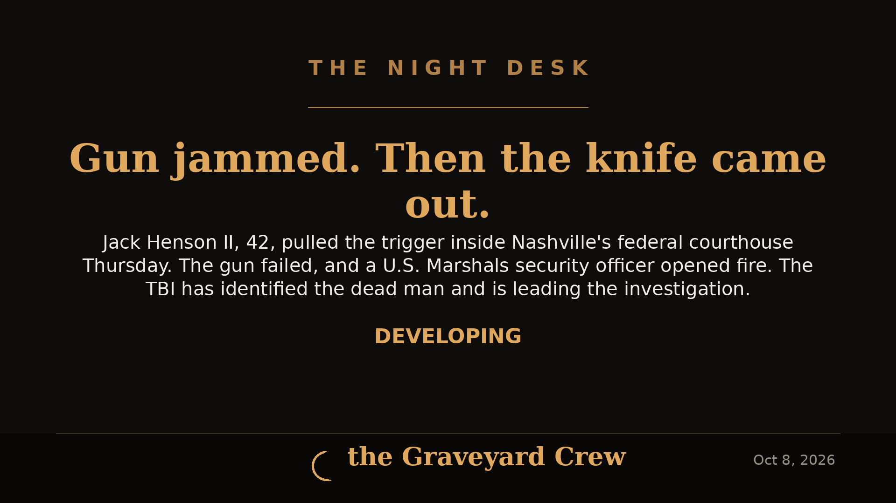
October 08, 2026
Gun Jammed at Nashville Federal Courthouse — Security Opens Fire, Man Killed
Jack Henson II, 42, pulled the trigger inside Nashville's federal courthouse Thursday morning. The gun failed, he pulled a knife, and a U.S. Marshals contract security officer fatally shot him. The TBI is leading the investigation.
READ THE STORY →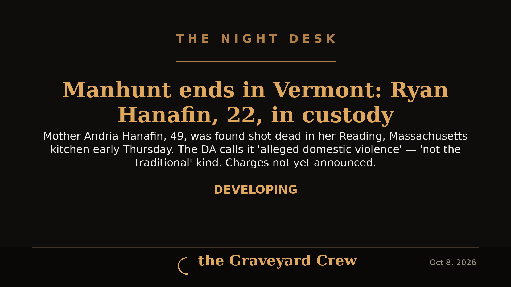
October 08, 2026
Manhunt over in hours: Ryan Hanafin, 22, in custody after mother Andria found shot dead in Reading, MA kitchen
Hours after a statewide manhunt, Vermont State Police took 22-year-old Ryan Hanafin into custody after his mother, 49-year-old Andria Hanafin, was found shot dead in her Reading, Massachusetts kitchen early Thursday morning.
READ THE STORY →October 08, 2026
DEVELOPING: Armed Man Fatally Shot by Security Inside Nashville Federal Courthouse
Jack Henson II, 42, pulled a gun inside the lobby of the Fred D. Thompson U.S. Courthouse in downtown Nashville on Thursday morning. The gun jammed; he pulled a knife — and a U.S. Marshals security guard opened fire. He was pronounced dead at Vanderbilt University Medical Center.
READ THE STORY →October 08, 2026
FBI foils ISIS-inspired plot to massacre shoppers at Mall of America
An 18-year-old Minnesota man was arrested after buying what he thought was an AK-47 from an undercover FBI agent. Feds say he planned to kill 30 to 60 people at an October 24 event at the nation's largest mall.
READ THE STORY →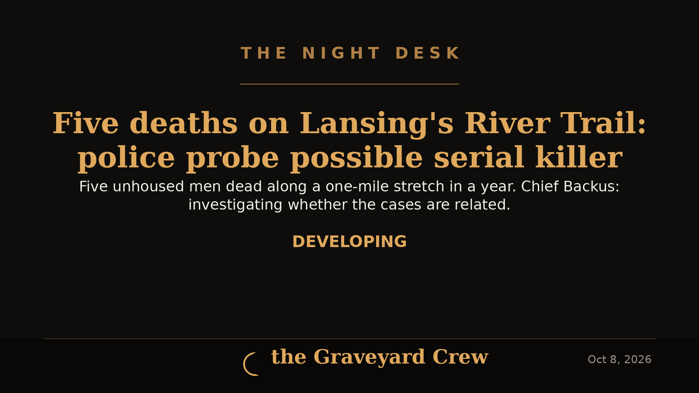
October 08, 2026
DEVELOPING: Five Deaths on Lansing's River Trail — Police Probe Possible Serial Killer
Five unhoused men have died along a one-mile stretch of Lansing, Michigan's River Trail over the past year. Police Chief Robert Backus says detectives are investigating whether the cases are related.
READ THE STORY →October 08, 2026
'Dexter' kill room: forensics student pleads guilty to murdering Maria Saceanu
Benjamin Day, 20, pleaded guilty on day two of his trial after police released bodycam footage of him claiming a "wild dog" had attacked him. He had stabbed 24-year-old Maria Saceanu 78 times in a plastic-lined Airbnb room.
READ THE STORY →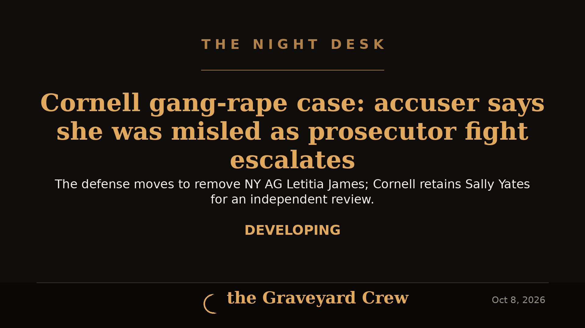
October 08, 2026
DEVELOPING: Cornell Gang-Rape Case — Accuser Says She Was Misled as Prosecutor Fight Escalates
The accuser's lawyer says the young woman was misled about the criminal investigation into an alleged 2024 Cornell fraternity gang rape — an investigation that ended almost as soon as it began. The defense is now moving to remove NY AG Letitia James as special prosecutor.
READ THE STORY →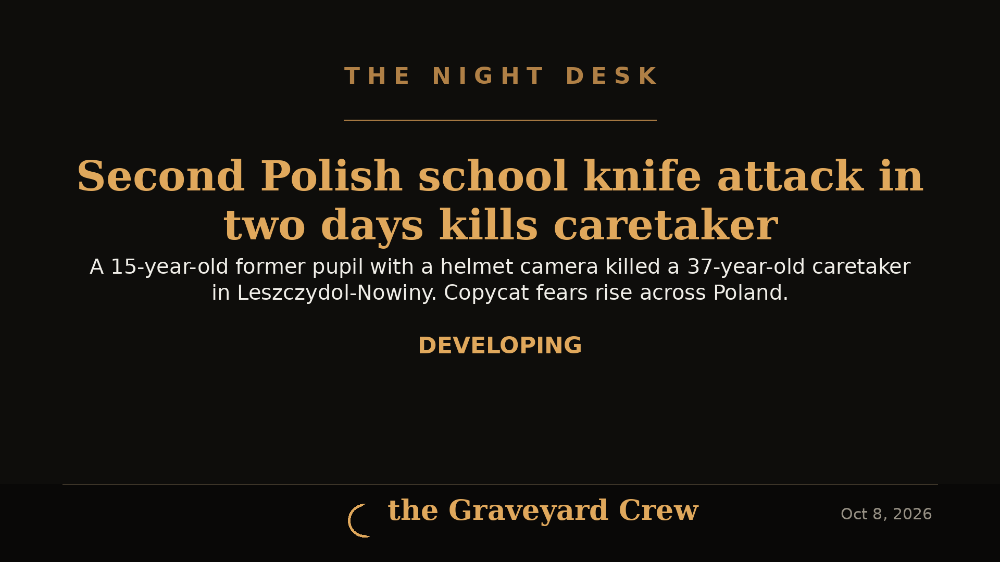
October 08, 2026
DEVELOPING: Second Polish School Knife Attack in Two Days Kills Caretaker; Copycat Fears Rise
A 15-year-old former pupil wearing a helmet-mounted camera killed a 37-year-old caretaker and injured the principal and a teacher at a primary school in Leszczydol-Nowiny — the second school stabbing in Poland in two days, with officials now fearing copycats.
READ THE STORY →October 08, 2026
20 Years Gone, No Answers: The Disappearance of Margaret Haddican-McEnroe
A Warren, NJ mom of three vanished 20 years ago this Saturday. The FBI is offering up to $25,000 for information leading to an arrest. Someone knows something.
READ THE STORY →October 08, 2026
DEVELOPING: Mom and 2-Year-Old Stabbed at Providence Bus Stop; Suspect Faces Attempted-Murder Charges
A 2-year-old girl is in critical condition after she and her mother were stabbed while waiting for a bus in South Providence. Nelson Blanco, 46, is being arraigned Thursday morning on attempted-murder charges.
READ THE STORY →October 08, 2026
DEVELOPING: Royal Navy Sailor, 24, Charged With Spying for a Foreign Power
Teddy Young, 24, a Royal Navy warfare intelligence rating, appeared at Westminster Magistrates' Court Thursday charged under the National Security Act. He was remanded in custody; his case goes to the Old Bailey on October 16.
READ THE STORY →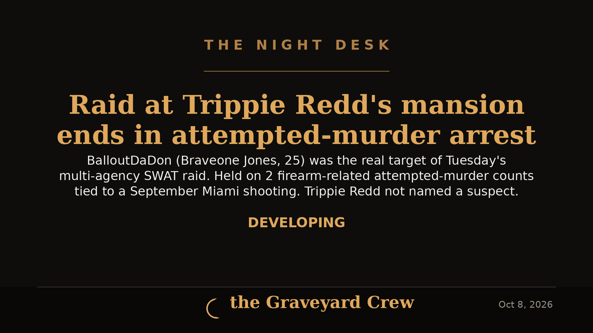
October 08, 2026
Raid at Trippie Redd's mansion ends in attempted-murder arrest
Braveone Jones, 25, also known as rapper BalloutDaDon, was the real target of Tuesday's multi-agency SWAT raid on Trippie Redd's Southwest Ranches mansion. Jones faces two firearm-related attempted second-degree murder counts tied to a September 15 shooting in Miami.
READ THE STORY →
October 08, 2026
Barricade ends in murder charge: NJ man accused in stabbing death after overnight standoff
Craig Montgomery, 60, barricaded himself inside a Franklin Township, New Jersey home Tuesday night. After a SWAT breach in the early hours of Wednesday, officers found an adult woman stabbed to death. Montgomery is charged with murder; the victim has not been identified.
READ THE STORY →October 07, 2026
Manhunt over: pair wanted for stabbing off-duty NYPD detective caught in Massachusetts basement
D'Angelo Caraballo, 25, and Sneider Mejia, 24, are in custody after the U.S. Marshals tracked them from the Bronx to Lynn, Mass. They face expected attempted-murder charges in the seven-stab-wound attack on Detective Jose Mercedes.
READ THE STORY →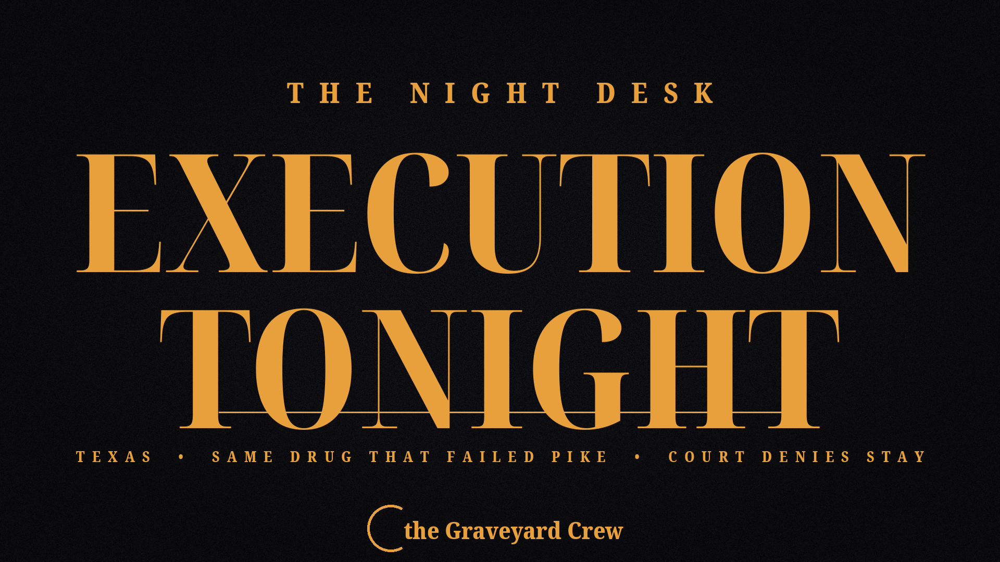
October 07, 2026
Texas execution set for tonight: Jamaal Howard, 46, would be the first executed since Christa Pike's botched lethal injection
Jamaal Howard is scheduled to die by lethal injection tonight for the 2000 robbery-murder of Silsbee convenience store clerk Vickie Swartout. A Texas court denied his lawyers' last stay request Wednesday — the same pentobarbital that failed to kill Christa Pike last week would be used.
READ THE STORY →October 07, 2026
Fort Dix corrections officer Jordan Pensak, 27, pleads guilty to sexual abuse of inmate
Jordan Pensak pleaded guilty in Camden federal court to sexual abuse of an individual in federal custody — admitting a sexual relationship with a Fort Dix inmate fueled by contraband phones, explicit texts, and a pregnancy scare. She faces up to 15 years at sentencing on Feb. 10, 2027.
READ THE STORY →
October 07, 2026
Hebron High teacher turns herself in on child sex crime warrants
Gloria Reséndiz, 35, faces indecency-with-a-child and child-grooming charges tied to a Hebron High School student. She surrendered at the Carrollton Jail on Tuesday and was moved to Denton County Jail.
READ THE STORY →October 06, 2026
Pueblo mom found guilty of first-degree murder in death of 3-year-old son
Samantha Kimberly was convicted Oct. 6 of first-degree murder and child abuse in the June 2024 death of her 3-year-old son. Sentencing is set for Oct. 26.
READ THE STORY →October 06, 2026
Vietnam cat-theft ring busted: 12 arrested after 2,700 cats stolen for meat
Police in Ho Chi Minh City say a citywide network trapped cats between 11 PM and 4 AM, sold thousands for meat — and it's not the first bust this summer.
READ THE STORY →October 06, 2026
Auburn Cold Case: $5,000 Reward Offered in the 2017 Killing of Herman "Ce-Ce" Lane
Nearly a decade after Herman Cornelius "Ce-Ce" Lane, 26, was found dead inside his Auburn apartment on March 4, 2017, CrimeStoppers has put $5,000 in fresh reward money on the table for information that leads to an arrest.
READ THE STORY →
October 06, 2026
10-hour standoff in Marion, Ohio ends with man's arrest — he fired shots at police during the takedown
Harold White, 64, is charged with two counts of attempted murder after a 10-hour armed standoff on Silver Street that ended Tuesday morning with bean-bag rounds and pepper-ball projectiles — and no serious injuries.
READ THE STORY →October 06, 2026
Two Men Found Shot Dead in Central Phoenix; Suspect at Large, Police Seek Tips
Phoenix police are searching for a suspect after two men were found shot to death near 16th and McKinley streets early Tuesday morning. Detectives want surveillance video and witnesses — and there's an anonymous tip line.
READ THE STORY →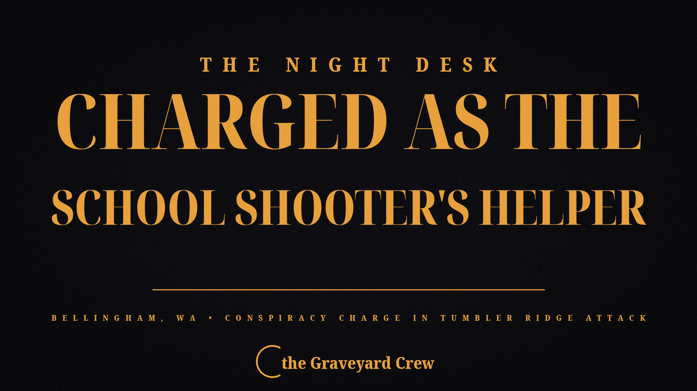
October 06, 2026
U.S. arrests Washington man accused of helping Canada's Tumbler Ridge school shooter
James Cody Bryant, 30, of Bellingham, Washington, is charged with conspiracy to murder persons in a foreign country after allegedly helping 18-year-old Jesse Van Rootselaar plan and broadcast the February 2026 Tumbler Ridge school massacre.
READ THE STORY →October 06, 2026
U.S. Arrests Washington Man Accused of Helping Plan Canada's Tumbler Ridge School Massacre
James Cody Bryant, 30, of Bellingham, Washington, was arrested Tuesday on a conspiracy-to-murder charge — accused of sending the Tumbler Ridge shooter money and advice, and agreeing to livestream the attack on Twitch.
READ THE STORY →October 06, 2026
41 years after a Newport strangling, a murder charge — William "Billy" Morton arrested in the 1985 killing of Hillary Hellewell
Rhode Island's Attorney General announced Tuesday that 61-year-old William "Billy" Morton has been charged with murder in the 1985 strangling of 22-year-old Hillary Hellewell, whose body was found on a Newport sidewalk by two brothers heading to work.
READ THE STORY →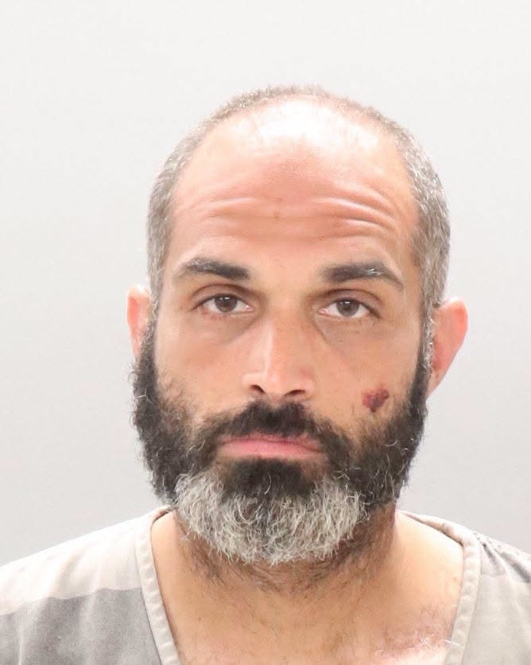
October 06, 2026
Knoxville manhunt over — murder suspect Corey Huff caught in Anderson County after 3 days on the run
Corey Huff, 41, wanted for first-degree murder in the Oct. 4 stabbing at a Knoxville Kenjo, was taken into custody without incident Tuesday morning after a tip put U.S. Marshals, the TBI, and sheriff's deputies on his trail in Anderson County.
READ THE STORY →October 06, 2026
Des Moines teen charged with attempted murder after ankle monitor, cameras and his own admission tied him to Court Avenue shooting
Jayshawn Woods Crawford, 18, was arrested Monday on an attempted-murder charge in the early-Sunday shooting of a 23-year-old on Court Avenue. Police say his ankle monitor put him at the scene, surveillance video captured him there, and he admitted the shooting to detectives.
READ THE STORY →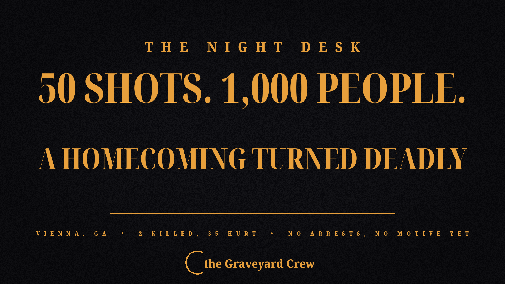
October 06, 2026
50 Shots, 1,000 People: Homecoming Block Party Shooting Leaves 2 Dead, 35 Hurt in Vienna, Georgia
More than 1,000 people had gathered for a homecoming weekend block party in the small town of Vienna, Georgia, when gunfire erupted early Sunday — killing two men and injuring 35 others. No arrests, no motive yet.
READ THE STORY →October 06, 2026
Unarmed security guard shot dead at San Diego's Crystal Pier; no suspect, no motive
A 31-year-old unarmed security guard was shot and killed near Crystal Pier in Pacific Beach around 2 a.m. Monday. San Diego police have no suspect description and no known motive — but say there's no ongoing threat to the public.
READ THE STORY →
October 06, 2026
Two found shot dead outside a Houston home — man charged with capital murder after a Flock camera tracked his car
David Elijah Herrera, 31, was charged with capital murder after two people were found shot to death in front of a home on Lindale Street in north Houston early Monday.
READ THE STORY →October 06, 2026
He wrote a book about killing his own mother — then confessed to a stranger
El Paso police say Richard Praytor, 49, staged his mother's 2023 death as a garage accident, then wrote a book about it — and confessed to a woman he met on Facebook.
READ THE STORY →October 05, 2026
Brown University shooting manhunt: FBI offers $50,000 reward as new suspect video released
Providence police released the clearest surveillance images yet of the Brown University shooting suspect Monday. The FBI is offering up to $50,000 for information leading to the shooter's identification, arrest and conviction. The suspect remains at large.
READ THE STORY →
October 05, 2026
Not guilty — for now: Columbus man indicted on federal charges in death of Hailey Buzbee, 17, as death penalty goes on the table
Tyler Thomas, 39, pleaded not guilty Monday to a federal indictment in the kidnapping and death of 17-year-old Hailey Buzbee — and the grand jury's special findings make him statutorily eligible for the death penalty.
READ THE STORY →
October 05, 2026
2 dead, 35 hurt as gunfire erupts at homecoming block party in Vienna, Georgia
More than 50 shots rang out across two locations a block apart with 1,000+ people gathered and deputies already on patrol. Jaquevion Jackson, 21, and Macaleb Jackson, 23, were killed; 35 were injured. The GBI is now leading the investigation.
READ THE STORY →October 05, 2026
Columbus police identify suspect in fatal East Side double shooting — Michael Rashawn Wells, 32, at large, considered armed and dangerous
A parking-lot fight on Columbus's East Side turned into gunfire early Sunday — one man dead, another wounded, and the suspect still on the run as of Monday night.
READ THE STORY →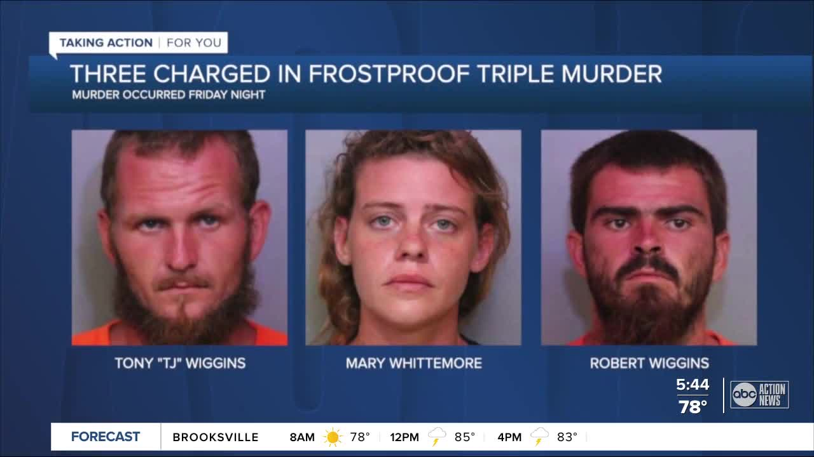
October 05, 2026
Jury Spares TJ Wiggins' Life in 2020 Frostproof Triple Murder
Six years after three men were gunned down on a night fishing trip in Frostproof, a jury voted to spare convicted killer TJ Wiggins the death penalty. He will spend the rest of his life in prison.
READ THE STORY →October 05, 2026
Pueblo Shooting Suspect Found Dead of Apparent Self-Inflicted Wound
After a 1 a.m. ShotSpotter alert sent Pueblo police to Lynwood Lane, officers treated a gunshot victim under additional gunfire — then found the suspect dead with an AR-style rifle.
READ THE STORY →October 05, 2026
Selma triple homicide: arrest made days after three men shot dead; new police chief was on her third day
Three men were shot to death Oct. 3 in Selma, AL. Police arrested a suspect Oct. 4 — on the new police chief's fourth day on the job.
READ THE STORY →October 05, 2026
Manhunt Day 2: Corey Huff Fled Into the Woods After Police Pursuit
Corey Huff, 41, wanted for first-degree murder in a fatal Knoxville stabbing, ditched his truck and disappeared into the woods off Carden Gap Road after a pursuit Sunday night. A multi-agency search with drones came up empty. The hunt resumes today.
READ THE STORY →October 05, 2026
Winfield man accused of killing wife, taking 2 kids and forcing family member to drive to NC at gunpoint
Police in Winfield, Alabama say a man shot and killed his wife Saturday morning, then left the home with two children and held another family member at gunpoint — forcing them to drive to North Carolina. The children and the family member are safe; the suspect is in custody.
READ THE STORY →October 05, 2026
17-Year-Old Football Star Shot Dead in Muncie
Yorktown High's Christopher Wilson Jr. — the region's highest-rated recruit and a West Virginia commit — was found dead in a car early Monday morning. Police have no suspect in custody.
READ THE STORY →October 05, 2026
FBI arrests California realtor at LAX — accused of spying on Taiwan president's family for China
Wanying Zhang, 34, of Irvine, was arrested Sunday at Los Angeles International Airport as she tried to board a flight to Shanghai. Federal authorities say she spent 2025 surveilling the son of Taiwan's president for the Chinese government.
READ THE STORY →
October 05, 2026
"Cornell 7": Defense lawyer calls on AG Letitia James to step down over pre-appointment Facebook post
An attorney for one of the seven accused former Chi Phi brothers says AG Letitia James publicly backed the accuser before Gov. Hochul handed her the case — and wants her to recuse herself to preserve trust in the investigation.
READ THE STORY →October 05, 2026
Jury Selection Begins Today in Rodney Hinton Jr. Aggravated-Murder Trial
A Cincinnati father charged with killing a Hamilton County deputy hours after watching bodycam footage of his own son's death goes to trial Monday. The defense says he didn't know the wrongfulness of his actions.
READ THE STORY →October 05, 2026
Gunman opens fire on hunting party in Norway — father and son killed, third hunter wounded
A shooter fired on about a dozen hunters gathered at a rural farm near Halden early Sunday. Two men — a father and his son — were killed at the scene. A man in his 20s was tackled by hunters, arrested, and charged.
READ THE STORY →October 05, 2026
No charges for Tampa man who fatally shot 15-year-old searching for his lost phone
Tampa police and the State Attorney's Office say they can't refute the shooter's self-defense claim in the Sept. 20 killing of Heitor Amaral. A witness and the teen's family dispute the official account.
READ THE STORY →October 05, 2026
COLD CASE CRACKED: Dallas police arrest suspect in 1993 murder of Tommie Davis, 32 years later
DNA from blood on a wall that didn't belong to the victim cracked a 1993 Dallas murder case wide open — 56-year-old Gary Len Ross now faces a capital murder charge.
READ THE STORY →October 04, 2026
Man stabbed to death on Columbus' North Side at 12:35 AM; suspect arrested 11 hours later in Logan
Brandon Parsons, 40, died at 1:15 AM after a stabbing at Cleveland Avenue and Reynolds Avenue on the city's North Side. Jacob Iams, 43, was charged with murder and arrested in Logan around 11:35 AM.
READ THE STORY →October 04, 2026
9-year-old killed, 5-year-old hurt in Indianapolis hit-and-run; suspect in custody
A 9-year-old boy was killed and a 5-year-old boy injured when a driver struck them and fled in northwest Indianapolis on Sunday afternoon. Police tracked the suspect with license-plate readers and made an arrest about three hours later.
READ THE STORY →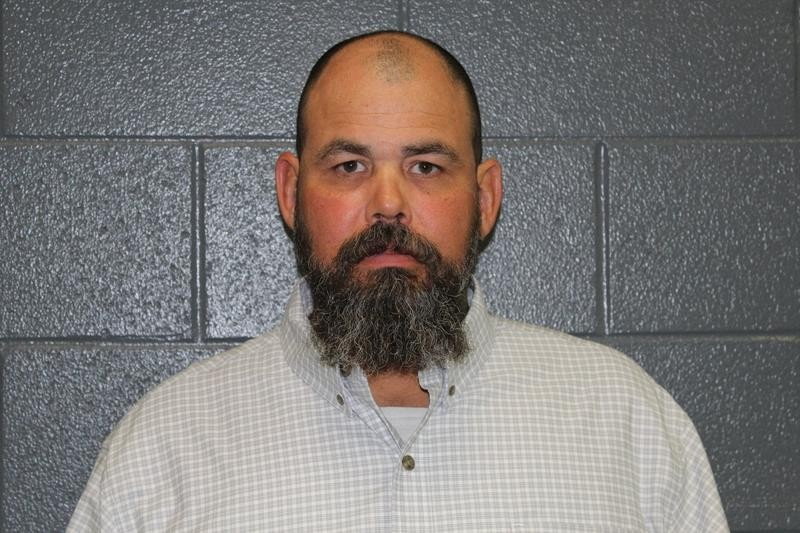
October 04, 2026
Delphi case twist: man Richard Allen's appeal team named as possible third-party suspect is behind bars — on an unrelated firearm charge
Patrick Westfall, one of two men named in open court by Richard Allen's appellate lawyers as possible third-party suspects in the Delphi murders, is serving a six-month sentence for a probation violation involving an unlawful firearm.
READ THE STORY →October 04, 2026
DEVELOPING: Manhunt Underway in Knoxville — Corey Huff Wanted After Deadly Stabbing
Knoxville police are hunting Corey Huff, 41, wanted in the stabbing death of a man outside a North Broadway convenience store early Sunday. Huff fled west on I-40 in a red 2005 Chevrolet Silverado — police say do not approach him.
READ THE STORY →October 04, 2026
Hit-and-run kills 9-year-old, injures 6-year-old on Indy's northwest side
Shortly after 1:30 p.m. Sunday, two children were struck in the 6700 block of Eagle Pointe Drive North. The driver fled. The 9-year-old died at the hospital. Police have no suspects — and they're asking for the public's help.
READ THE STORY →
October 04, 2026
DEVELOPING: Debris Found Off Nantucket in Search for Missing Air Ambulance — 6 Unaccounted For
A Latitude Air Ambulance Gulfstream carrying six people from Bermuda to Boston vanished early Saturday after the pilot declared an electrical emergency. The Coast Guard found a debris field off Nantucket late Saturday; all six remain unaccounted for.
READ THE STORY →
October 04, 2026
DEVELOPING: 2 Dead, 35 Hurt in Mass Shooting at Georgia Homecoming Block Party
Gunfire erupted around 1:25 a.m. Sunday at a homecoming block party in Vienna, Ga., where more than 1,000 people had gathered. Two men, 20 and 23, were killed. The GBI is investigating.
READ THE STORY →
October 04, 2026
Yemen's Government Announces Major Offensive Against Houthis — Shipping Lanes at Risk
Yemen's Saudi-backed government has declared a major military operation to retake territory from the Iran-aligned Houthis, escalating a conflict that threatens Red Sea shipping and global energy routes.
READ THE STORY →
October 04, 2026
12-Year-Old Killed, 4 Injured in Baltimore Shooting Over Parking-Spot Dispute
Gunfire erupted at Leon Day Park during a youth football homecoming game Saturday evening after an argument over a parking spot. A 12-year-old girl was killed and four others wounded; police are searching for at least two suspects.
READ THE STORY →
October 04, 2026
20-Year Cold Case Cracked: Husband Arrested in 2006 Killing of Wife Found Under Big Bear Home
Jill Maiorca, 29, was reported missing in 2007 — believed murdered in November 2006. Her remains were found in a Big Bear crawlspace in 2020, unidentified for three years. Her former husband now faces murder charges.
READ THE STORY →
October 04, 2026
Murder suspect shot by Georgia deputies after PIT maneuver ends Turner County chase
A statewide be-on-the-lookout alert sent Turner County deputies after a Henry County murder suspect Saturday afternoon. A PIT maneuver ended the chase — then the suspect allegedly fired on officers, who returned fire. He survived. The GBI is investigating.
READ THE STORY →
October 04, 2026
12-year-old girl killed in crossfire as gunmen open fire at youth football homecoming in Baltimore
A 12-year-old girl was killed and three adults wounded Saturday evening when two men opened fire near a youth football homecoming event at Leon Day Park. Police are searching for at least two suspects; no arrests have been announced.
READ THE STORY →
October 04, 2026
US Marine, 20, arrested in Okinawa on suspicion of killing local woman at hotel
Lance Cpl. Devin Jacob Ballad is suspected of killing 39-year-old Anna Yagi at the Naminoue Crystal Hotel in Okinawa. He denies the allegations; the case is expected to be referred to Japanese prosecutors within 48 hours.
READ THE STORY →
October 04, 2026
Two Young People Shot Dead at Packed Open Mic Night in Northridge — Gunman Still at Large
Gunfire erupted inside the Artist Lounge during a packed event near Cal State Northridge late Friday night. Two victims, ages 18 to 25, were killed at the scene. The shooter is still at large.
READ THE STORY →
October 03, 2026
AI Got It Wrong, She Spent Six Months in Jail: TN Grandmother Sues Fargo for $10M Over Face-Match Arrest
Angela Lipps, 50, was babysitting her neighbor's kids in Elizabethton when U.S. Marshals took her at gunpoint over bank thefts in a state she'd never visited. The charges were dismissed. Now she's suing.
READ THE STORY →
October 03, 2026
BREAKING: Medical plane with 6 aboard vanishes near Nantucket — debris found tonight
A Gulfstream air ambulance flying from Bermuda to Boston went dark over the Atlantic early Saturday. Coast Guard crews found a confirmed debris field off Nantucket Saturday night — and the search for six people continues into the night.
READ THE STORY →
October 03, 2026
Luke Daley — Once Questioned in the Nancy Guthrie Case — Booked on Unrelated Weapons and Drug Charges
The man detained in February's SWAT raid is back behind bars. Authorities stress the new charges are unrelated to Nancy Guthrie's disappearance — and eight months on, no suspect has been named.
READ THE STORY →
October 03, 2026
Murder by Mistake: Jury Convicts Sheldon Paul in 2019 Killing of Sebastian Avilan-Medina
A jury found Sheldon Paul, 42, guilty of two counts of second-degree murder for ordering two teens to a Middletown apartment in 2019 — retaliation for a burglary the victim never committed.
READ THE STORY →
October 03, 2026
Narco kingpin Navpreet Singh deported from Türkiye, sent to 10-day police custody in Delhi
Singh allegedly ran a heroin-and-meth pipeline from Afghanistan to India under the fake identity "Navab Virk" — and Turkish citizenship to go with it. Indian agencies tracked him, unmasked him, and brought him home.
READ THE STORY →
October 03, 2026
Midnight shooting in Phoenix: driver shot dead behind the wheel, suspect cornered in nearby apartment
A driver was found shot dead inside his crashed car near 19th and Maryland avenues just after midnight. Police tracked the shooter on foot into a nearby apartment complex and made an arrest.
READ THE STORY →
October 03, 2026
2 Teens Charged in January Murder of 17-Year-Old Chicago Girl
Nine months after a 17-year-old girl was shot in the back inside a car on Chicago's West Side, police arrested two teenage suspects Friday — both now face first-degree murder charges.
READ THE STORY →
October 03, 2026
Oxnard 8-Car Pileup Driver Turns Himself In, Booked on Two Murder Counts
David Mora, 29, surrendered to Oxnard police Friday night, eight days after a red-light crash at Victoria and Doris avenues killed two men and injured five. He's held on $5 million bail ahead of an Oct. 6 court date.
READ THE STORY →
October 03, 2026
Four Teens Charged in Shooting Death of 16-Year-Old Cameron Frierson After Nashville Football Game
Six weeks after 16-year-old Cameron Frierson was shot near Pearl-Cohn High School following a football game, Metro Nashville detectives have arrested four teenagers — ages 16, 17, 17 and 18 — on criminal homicide and conspiracy charges.
READ THE STORY →
October 03, 2026
Kentucky Castle CEO Ousted After Lawsuit Claims Hidden Cameras Secretly Filmed Guests
Wes Henderson, the Angel's Envy co-founder who turned The Kentucky Castle into a fairy-tale hotel, was fired as CEO after a sealed lawsuit alleged he secretly filmed guests undressed with hidden cameras.
READ THE STORY →
October 03, 2026
SC Mom Charged in Starvation Deaths of Daughters, 2 and 15 Months
Neighbors, family, and the girls' father called police repeatedly about Harlow and Emory Deacon. Deputies visited five times. On Tuesday, the girls were found dead in their Ladson home — and their mother told investigators she couldn't remember the last time she fed them.
READ THE STORY →
October 03, 2026
Tennessee's Prisons Chief Resigns After Failed Execution of Christa Pike
Gov. Bill Lee announced Saturday that Department of Correction Commissioner Frank Strada is stepping down this month — days after the state failed to execute Christa Pike by lethal injection, leaving her gravely ill on a ventilator.
READ THE STORY →
October 03, 2026
Flyer Canvass Cracks Tampa Homicide: Suspect Turns Himself In
Detectives went door to door handing out flyers with a suspect's photo — and one neighbor's tip later, the man accused in a September 22 killing on Nebraska Avenue turned himself in.
READ THE STORY →
October 03, 2026
Arizona Court Vacates Manslaughter Sentence Over AI Video of Dead Victim
The Arizona Court of Appeals ruled that an AI-generated video of shooting victim Christopher Pelkey — shown before sentencing — "crossed the line," and ordered Gabriel Paul Horcasitas resentenced.
READ THE STORY →
October 03, 2026
'American Idol' alum Caleb Flynn convicted of murdering wife Ashley; sentencing set for Monday
A Miami County jury convicted former worship pastor Caleb Flynn, 40, on all nine counts in the February shooting death of his wife Ashley. He could face life in prison without parole when he's sentenced October 5.
READ THE STORY →
October 03, 2026
18-year-old killed in Newnan, GA officer-involved shooting; GBI investigating
Zadarious Dorsey, 18, was shot and killed by a Newnan police officer around 1 a.m. Saturday after a foot chase. The officer says Dorsey pulled a gun from his waistband after a taser failed. A gun was recovered at the scene; the GBI is conducting an independent investigation.
READ THE STORY →
October 03, 2026
Hochul: Cornell rape investigation 'deeply flawed' as AG takes over the case
Gov. Kathy Hochul torched the original Cornell police investigation into the alleged 2024 Chi Phi gang rape at a Friday press conference, revealing Jane Doe told police she was "100% confident" she was raped — a transcript prosecutors say they never received. AG Letitia James is now running the case as special prosecutor.
READ THE STORY →
October 03, 2026
Texas Blue Alert Ends With Arrest: Deputy Shot, Patrol SUV Stolen in Channelview
Chase Layne Patin, 25, faces four counts of aggravated assault of a public servant after allegedly shooting Deputy Javier Perez-Garcia and stealing his marked patrol SUV in Channelview, Texas. A statewide Blue Alert and an overnight door-to-door manhunt ended with Patin found hiding in a backyard shed.
READ THE STORY →
October 03, 2026
Bodycam Released: The McDonald's Moment Cops Knew They Had Luigi Mangione
A Manhattan judge unsealed the Altoona bodycam trove after CNN's petition — showing the "That's 100% him" moment, the fake Mark Rosario ID, and officers grinning as they pulled a gun magazine from his backpack.
READ THE STORY →
October 03, 2026
Detroit Mass Shooting: 14 Counts Filed After 3 Killed, 4 Wounded Over a Stolen Phone
Wayne County Prosecutor Kym Worthy says last weekend's Prest Street after-hours shooting started over a missing cell phone — and the address had already been on police radar.
READ THE STORY →October 03, 2026
UAE Calls FlyDubai Cockpit Attack an "Attempted Terrorist Attack"
The UAE prosecutor general said Saturday the flydubai co-pilot who attacked his captain with a crash axe attempted a terrorist attack — the first official terror designation in the FZ1073 investigation.
READ THE STORY →
October 03, 2026
Triple Shooting in Wilmington Kills 18-Year-Old, Wounds Two Others
Jabez Moore, 18, was killed in a triple shooting Thursday afternoon in Wilmington's Baynard Village neighborhood. Two other victims are stable. No arrests yet as gun violence in the city climbs.
READ THE STORY →
October 03, 2026
Bus driver shot dead over a missed stop; Culver City suspends all weekend service
A Culver CityBus driver was shot and killed Thursday evening in Mar Vista after a passenger argued with him over a missed stop. The suspect — who fled on a bicycle from the bus's front rack — was arrested Friday. The city has suspended its entire bus system for the weekend so transit workers can grieve.
READ THE STORY →
October 03, 2026
PIT maneuver ends I-20 chase; two wanted suspects in custody
A Tuesday-night pursuit across metro Atlanta ended when APD officers used a PIT maneuver to stop a car carrying Rickora Walker, 23 — wanted in Metro Nashville on an attempted second-degree murder charge after failing to appear in court — and driver Joshua Brownlee, 20, wanted on felony theft charges.
READ THE STORY →
October 03, 2026
Arrest Made in 2006 Franklin Double Homicide of Blake and Chynna Dickus
More than 20 years after a 10-year-old boy and his stepmother were stabbed to death in their Franklin, Indiana home, the Johnson County Prosecutor's Office announced two murder charges against Michael Jerome James, 35 — who was 14 at the time of the killings.
READ THE STORY →
October 03, 2026
Caught by a rerun — 29-year Des Moines hit-and-run cold case cracked by an America's Most Wanted episode from 1998
Gerardo Garcia-Michel fled Iowa in 1997 after police say he struck and killed 64-year-old Leslie Ruby. A Crime Stoppers tip — triggered by a rerun of the case's 1998 America's Most Wanted episode — led U.S. Marshals to his neighbor's doorstep in New Jersey.
READ THE STORY →
October 03, 2026
Warrant Issued for Tennessee Teen in Richmond, Indiana Homicide
Joshua Wade Smith, 18, of Knoxville, was charged Friday night with murder and three counts of attempted murder in a Sept. 28 shooting that left 18-year-old Cecelia Rayne Hargrove dead and two juveniles wounded.
READ THE STORY →
October 02, 2026
28 Years Later — Arrest in the 1998 Cold-Case Murder of Georgia Mom Christy Dawn Myers
Georgia investigators say continued forensic testing identified James Lawrence III, 47, in the September 1998 stabbing death of 20-year-old Christy Dawn Myers, whose body was found beside her car on a Coffee County highway.
READ THE STORY →
October 02, 2026
Mistaken Identity: New Dad of Triplets Kidnapped from a Temple — Manhunt On for Three Suspects
Avtar Singh, 57, was taken in broad daylight from a Sikh temple in Tracy, California — but investigators say the three indicted men grabbed the wrong person. Now Alberto Alencastro, Alfonso Segura, and Barnabe Segura are at large and considered dangerous.
READ THE STORY →
October 02, 2026
FBI's First Cyber Fugitive on the Ten Most Wanted List Is Back on U.S. Soil
Anibal Alexander Canelon Aguirre — a.k.a. "Prometheus" and "The Engineer" — appeared in a Nebraska courtroom Friday to face charges over a multimillion-dollar ATM jackpotting scheme allegedly funding Tren de Aragua.
READ THE STORY →
October 02, 2026
911 Dispatch Reveals Ken Urker's Final Hours
Page Six obtained the 911 dispatch call: Ken Urker's sister-in-law told dispatch he was in a "dark place," had made threats to commit suicide, and owned a gun. The official cause of death remains unreleased.
READ THE STORY →
October 02, 2026
Ex-Congressman David Rivera Sentenced to 10 Years for Secretly Lobbying for Venezuela
Former U.S. Rep. David Rivera got a decade in federal prison Friday for taking $20 million from Venezuela's state oil company to quietly lobby Washington — and never registering as a foreign agent.
READ THE STORY →
October 02, 2026
Four Teens Arrested in Fatal Shooting of 16-Year-Old After Nashville Football Game
Nashville police have arrested four teens — ages 16, 16, 17, and 18 — in the August drive-by killing of Cameron Frierson, 16, who was gunned down walking home from a high school football game.
READ THE STORY →
October 02, 2026
Ken Urker's Autopsy Is Complete — But the Wait for Answers Continues
The Lafourche Parish Coroner's Office says there is "no definitive cause of death" yet. Toxicology results are still pending.
READ THE STORY →
October 02, 2026
73 Days of Freedom, Then Back to Prison: Sara Polston Charged With Voting While Ineligible
Polston served 73 days of an 8-year DUI sentence before going home on a GPS ankle monitor. On October 1 she was hauled back — now facing two felony counts of voting while ineligible.
READ THE STORY →
October 02, 2026
Deputy Killer Sentenced: Life Without Parole for the Murder of Ryan Clinkunbroomer
Kevin Cataneo Salazar will die in prison for the 2023 ambush killing of LA County Deputy Ryan Clinkunbroomer — a fourth-generation deputy engaged just four days before he was gunned down at a Palmdale stoplight.
READ THE STORY →
October 02, 2026
DOE Electrical Engineer Arrested on Federal Charge of Trying to Aid the Houthis
Ashton Hamed Ellaboudy, 51, allegedly bought explosive precursors and drone parts, traveled through Oman toward Yemen, and advised an FBI informant posing as a Houthi "Colonel." He faces up to 20 years.
READ THE STORY →
October 02, 2026
AG Letitia James Takes Over Cornell Frat Gang-Rape Probe
Governor Hochul stripped the Tompkins County DA of the case. Seven Chi Phi brothers are accused of drugging and raping a student in October 2024; Cornell expelled two.
READ THE STORY →
October 02, 2026
Botched Execution in Tennessee: Two Doses Failed, Governor Halts All Executions Through 2026
Christa Pike's execution went wrong when two doses of pentobarbital failed. She survived — breathing, in critical condition — and the governor paused every execution in the state.
READ THE STORY →
October 01, 2026
Ken Urker, Fiancé of Gypsy Rose Blanchard, Found Dead on His Birthday in Louisiana
Urker was found unresponsive after a family member checked on him when Gypsy's "happy birthday" text went unanswered. The cause of death was not yet known; the story was developing.
READ THE STORY →
October 01, 2026
Rick Ross Arrested in Miami on Domestic Battery Charges
The rapper faces a felony strangulation charge and a misdemeanor count, was released on $6,000 bond, and is due back in court October 22.
READ THE STORY →